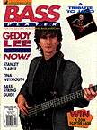
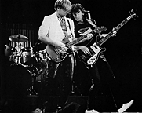

Geddy Lee -- Bass Is Still The Key
Taken from Bass Player, November/December 1988
By Robin Tolleson
One might imagine a five-time poll winner on bass like Geddy
Lee of Rush talking about the virtues of taste and technique. But
the 34-year-old Lee now laughs that he tries to be as obnoxious as
he can in the limited time he's allowed to play the bass guitar
with Rush. Maybe that's one reason he wins polls -- he goes for
broke at least twice a tune, scampering up and down the neck of
his bass with reckless but calculated abandon.
Geddy Lee may joke about his frustration at having to play a
lot of bass parts on keyboards or pedals, but he's used sounds
from other sources from the very beginning of the band, even
before MIDI. Certainly one of his strengths has always been the
variety of bass colors he gives Rush. It's interesting that you
never know where Geddy's sound might be coming from -- his hands
or feet, a keyboard synth, guitar of some kind, or footpedal.
One minute the bass sound is crisp like a Rickenbacker, the
next it's a low rumble that pins your ears back, then a roar like
a church organ. His bass parts are compositions in themselves.
There's a different sound for each mood or time change in Rush's
music.
Several years ago, in the course of a Blindfold Test with
the great jazz drummer Tony Williams, I decided to cross him up
and play something different than the Elvin Jones, Miles Davis,
and Chick Corea tracks I had been feeding him. I let him listen
to Rush's "Limelight" [from Moving Pictures].
"This is the first one that I've really liked," said Tony.
"Even though it's a 7/4 here and goes into 3 over there, it feels
really relaxed. I get an emotional feeling from it. I like the
bass playing and the bass sound. The groove is good, and that's
the bass and the drums."
Williams' compliment underscores a basic fact. The
musicians who come in contact with Rush have a healthy respect, if
not a fondness for the band. And the average listener just gets
turned on by the grandness of it all, even if they don't know how
well the group is traversing the odd time signatures.
The members of Rush all take their music very seriously --
they're all repeat poll-winners in music magazines -- and they've
improved since their early, more heavy metal-influenced days, both
as players and songwriters. And Lee would deserve credit for
expanding the group's sound as much as anyone, with his
integration of bass pedals and synths into the musical picture.
Drummer John Rutsey joined Lee and guitarist Alex Lifeson in
the original Rush. They played mostly high schools around Ontario
at first because they were too young to play the clubs where the
legal drinking age was 21. When the age was lowered to 18 they
began doing showcases in Toronto, and found a loyal following and
a record deal with Mercury/Polygram in 1974. Two weeks before
their first tour of the U.S. later that year, Rutsey announced he
was leaving the group, and Neil Peart answered their frantic ad
for a drummer. The trio has been the most consistent progressive
hard rock band in the business ever since.
BASS PLAYER got the opportunity to speak with Geddy Lee
while he was busy working with producer Peter Collins on Rush's
upcoming live double-album.
Q: Who were your first musical influences?
-
A: I was first influenced by bassist Jack Bruce. Cream was one
of the groups that I loved when I was growing up and first got
into music in a more serious way. We used to play Cream songs way
back when. What I liked about Jack was that his sound was
distinctive -- it wasn't boring, and it wasn't typical. And he
was very busy. He wouldn't keep his place, which I really liked a
lot. He wouldn't keep quiet as a bass player. He was obtrusive,
which I like in a bass player.
Q: I guess it helps if you're in a trio setting. You might run
into trouble if you were to start adding more musicians.
-
A: Yeah, the freedom of the trio is that you're allowed to be
as busy as the thing can take. Obviously you have to use taste
and discretion where and when you're being busy. But the thing
that appealed to me about bass players all along were bass players
that played more than they were supposed to play, or more than the
conventional bass player would play.
Q: On Hold Your Fire [1987], the bass is in some
great-sounding rooms. There's one section on "Lock And Key" where you
get a good trebly effect. I know you used Rickenbackers in the
past,and that sound reminds me of it.
-
A: You can get that sound out of most basses I think, but a
Rickenbacker has a particular kind of top end, and bottom end as
well. It has a particular kind of classic twang to it. I found
that I wanted to get a little more subtlety in the sound, and I
couldn't quite get it out of the Rick. I wanted to change the top
end a little bit, get a little different shaped bottom end. Then
I moved to a Steinberger, which really gave me a totally different
sound. The top end didn't range as high and twangy, and the
bottom end was quite a different shade. I liked it a lot, and
used it onstage, and on the Grace Under Pressure album. But on
Power Windows I got introduced to the Wal bass, made by a small
company in England. Our producer, Peter Collins, had one and
suggested I try it out. I used that bass on Hold Your Fire, and
I'm very pleased with the results and its flexibility. I use a 4-string
most of the time, but on "Lock And Key" it was a 5-string
they made with an extra low "B". I find that low string really
means more today, because we're living in the world of
synthesizers that go lower than basses ever went before.

Q: On "Force Ten" [from Hold Your Fire] you do some chordal
stuff on bass. What were you thinking of then? It really pushes
the tune ahead.
-
A: Before I had a visit from Jeff Berlin, who's a friend, on
the tour I had the opportunity to watch him goofing around
backstage with a bass, and was just amazed at his knowledge of
bass chords. That's something I had never really exploited in my
playing, so he inspired me to play around more with it. He
probably doesn't know it, and would be embarrassed to hear it. I
ended up using bass chords on "Force Ten" and "Turn The Page".
Not so much in the sense of strumming them as using my thumb more,
almost like a fingerpicking style of playing, which is something
that I'm still working on. Just plucking with my thumb and going
back and forth between the thumb and the first two fingers and
pulling. Almost like a snapping technique. It's opened up a bit
more range for me. There's more melodic possibilities and
rhythmic possibilities too, which is an important role for the
bass player. If you can establish not only a melody but a
rhythmic feel, that's an extra tool.
Q: During "Prime Mover" [from Hold Your Fire] you
really dig into your part during the guitar solos. I read how you guys
compose the guitar solos as a group. Do you have to wait until
the solo is composed before you come up with your parts?
-
A: We obviously have a chordal structure, and a melodic fix or
picture of what the part's going to be. Usually I put it down,
and between Neil and myself, we get little rhythm patterns going.
I play around with the melody, and depending on what the tone
center is and what the chord structures are in that area, I just
write my part. Then Alex plays different solos around what Neil
and I have already put down. He's quite content to work with what
we've put down, and in most parts he's around through every stage
anyway, so he's quite aware of the direction it's going in. He'll
go down and wail, and a lot of times he will surprise us. It's a
totally different direction than we had expected it, but it's
always within the melodic structure that exists.
Q: At the end of "Open Secrets" [from Hold Your Fire] it
sounds like you guys are jamming, almost an improvised thing.
-
A: It sort of was. That song went through a lot of changes,
and by the end of it, we had established this bass riff near the
top of it. At the end we got into this groove when we were in the
demo stage that we knew would be fun. So when Neil locked into
that groove and went with it, he felt so good that we just let him
go. And I just jammed to what he already put down.
Q: That's an interesting sequence at the beginning of "Big
Money" [from Power Windows]. Do you do programming?
-
A: Usually I'll do a basic sequence as a direction of a part,
and then when (keyboardist) Andy Richards comes in the studio he
listens to what I've done. If he can improve on it, he has full
license to go ahead. And the nice thing about working with him is
he's very open to everybody's ideas. I can think up an idea that
I don't have the technical ability to play, but he does, and he'll
take that idea even farther than I imagined it. That's a real
bonus for me.
Q: Sometimes it's hard to tell if you're playing a bass guitar
or a keyboard. On the verse of "Territories" [from Power
Windows] there's a real droning type of bass part. Then, on the
B part, you get into a more staccato kind of sound.
-
A: Whenever you hear that low bottom end that drones
underneath, it's usually my Moog pedals. I've been using those
for years and they're really great when I have to go to keyboards
and sustain the bottom end. Because they have an unobtrusive bass
that doesn't phase.
Q: When you started playing bass, did you have any idea that
you'd end up playing keyboards and pedals?
-
A: Not at all, and every year it amazes me more and more how
much stuff I have on my side of the stage that I have to deal
with. Because I really am not a proficient keyboard player. I
know my name pops up in these keyboard polls from time to time,
and it's really unfair, because I really am not a good keyboard
player. I'm really strictly a synthesist and sort of an
orchestrator. I am learning how to play keyboards better every
day, and I am presently studying piano.
Q: You do actually miss playing the bass at times?
-
A: Oh yeah, it's a constant frustration too because when we're
recording, a lot of times I know I won't be able to play bass in
certain parts of songs because I'll be playing the keyboards. So
I'm very reluctant to put a bass part on the record that I won't
be able to play live. So it's a battle. We overcame that a
little on this past tour, because now technology has finally
caught up with us. I can now program certain keyboard chords to
pedals onstage that can trigger different synthesizers.
Q: As a bassist, does the technology make it easier, or do you
just keep coming up with harder things to do?
-
A: In the end you're as busy as you want to be as a bass
player. You really have to serve the song the best way possible.
And if it serves the song to be busy, that's fine. But if it best
serves the song to be a bit more fundamental and groove-oriented,
you have to do that. You usually wait for your moments. It's
difficult to be a musician with taste. I think taste is the most
difficult thing for a player to acquire. Sometimes being a little
more subtle with your talent gets you farther and adds more to the
song. Not to say that I've always exercised that belief.
There have been times where I've definitely been out of turn, and
thrown some notes out that were probably not in the best service
of the songs groove. But I think the older I get, and the more
experience I get at writing and arranging, the more I try to bear
that in mind.
Q: It's definitely not something we think about when we're
young. It's more going for broke then.
-
A: Yeah, and that's good, that's fine. That's something that
does come with growing up as a musician and changing your style,
or just absorbing more knowledge about what songs you want to
play. And it's also dependent on the style of music that you want
to play. If you don't want to play anything other than a very
indulgent brand of music, then you don't have to.
Q: "Grand Designs" [from Power Windows] features a great drum
part by Neil. Some good bassists might be thrown off by that kind
of part.
-
A: I don't remember any difficulty with that song, as a matter
of fact. One of the best things about playing with the same
person for a very long time is you have this kind of telepathic
connection in a way. You know each other so well stylistically
that there's a whole range of probabilities that you have in
common. So if I hear him going in a direction or he hears me
going in a direction, we can shift to that direction. I think
we've figured out a way to complement each other so that it's
comfortable. It's something that comes with time and work. And
knowing when to simplify and when not to simplify. Sometimes when
a bass player is playing with a rhythmically difficult drum part,
that's the time to simplify, help the part cruise by playing more
consistently. That can help knit the parts together. At the same
time, if there's another drum part coming up where he's going to
be more solid and fundamental, that will enable the bass to
stretch out a bit and get more active. So it's give and take.
Q: There's not any ego involved at this point, but it's hard to
get rid of it when you're a kid.
-
A: Yeah, and it's not necessarily the best thing to get rid of,
because that's what drives you sometimes. Having an ego is not a
bad thing. That's what makes you move, that's what makes you
happy with yourself. But when your ego is encroaching on other
peoples' presence, it becomes a problem.
Q: Do you and Alex ever both play pedals simultaneously
onstage?
-
A: Sometimes, when we just want a ridiculous amount of bottom
end. That bottom end from pedals really sounds great in certain
halls, it really fills and gives you a lot of pant flap, as we
call it. It shakes your pants. Moves a lot of air in the low
range, and sometimes it's that sheer bottom end power that we're
going after. But Alex has been a lot busier on the last tour.
He's gotten responsibility off my shoulders by playing a lot more
keyboard and foot pedal parts to enable me to play more bass.
Q: It's really interesting the way you'll combine the pedals,
keyboards, and your bass together. Can you remember using all
three on one song?
-
A: Probably "Open Secrets" and "Force Ten" are examples of
using all those kind of things. In "Open Secrets" I go back and
forth from playing bass to pedals, with sequencers going. In
"Force Ten" there's a good use of bass chord playing, back and
forth with different kinds of bass sequencing. The third chorus
of "Force Ten" is one of my favorite bass sequence parts on the
record. I use pedals in most songs that we do. Often you'll hear
bass pedals on the choruses. On a song like "Lock And Key" for
example, instead of using pedals, I'm using MIDI to help me play
the lower end of the piano part -- triggering piano plus a synth
bass to sustain the bottom end. When we play a song like "Red
Sector A" [from Grace Under Pressure] live, MIDI enables me to
use the bass arpeggiator part, and send it to more than one
instrument. Then I can get a really nice bass sound triggered by
the arpeggiator that keeps the bottom end rolling and feeling
good. That song sounds better live than it ever did on record,
just because the technology has allowed me to get better sounds.
That's another reason for doing this up-and-coming live album. I
think some of the versions that we'll be putting on this live
album are better than the original versions.
Q: When you're making a decision of what instrument to play in
a certain part, is the deciding factor always the sound that you
want, or is it sometimes influenced by the fact that you have to
be singing a difficult line at that time?
-
A: It's usually purely influenced by whether I'm playing
keyboards or not. Whenever I can play bass I do. Bass is
always the first choice. But there are situations where I know
that it'll be necessary for me to play keyboards live in order to
justify that song. If I know that a bass part underneath it will
be fairly simple, I might decide to leave the bass out and play
bass pedals. If you're just holding very simple notes for a long
time, in some ways I'd rather have the bass pedals do that,
because the bottom end is a little more luxurious. In the past it
had to be a more difficult decision, because we didn't have the
technology that we have now, so I'd find myself leaving out larger
chunks of bass. But now I think I play the bass up to 75 or 80
percent of the time. So the decision is always made strictly on
whether my hands need to be busy playing keyboards or not.
Q: Has singing and playing at the same time ever been a problem
for you?
-
A: Oh sure. It's not the easiest thing in the world to do.
You have to put a lot of hours into practice. As a matter of
fact, on this tour I had a major problem with "Turn The Page"
[from Hold Your Fire]. It's a very busy bass part, and the
vocal part doesn't really relate to it very much. Eventually I
got it, but it took a lot of practice. You can do those things,
but you have to practice them a lot. You have to split yourself,
as they say. Split your hands. Split yourself in two really, and
let your hands do something, and let your voice do the other.
Q: Drummer Tony Williams once commented to me about your
fluidity going over odd time signatures. Do you think about
playing those, count the times, or just try to feel them when
you're playing a song like that?
-
A: When you're first writing them, you are counting them.
Just until you start feeling what the changes are. You have to
count any difficult groove at first, but once you know it, then
your instincts take over and you don't have to count. You just
feel the changes. After a certain point they become more musical
and less mathematical. But that's only after learning to feel
comfortable with a particular time signature. Like with us,
playing in 7 is now so comfortable we almost never have to count
it. We can shift into that fairly easily. In the early days it
was very difficult to make it sound like it wasn't counted, and
sometimes for effect you want it to sound like that -- if you're
playing in 9s or something really exaggerated like Genesis used to
do from time to time, and really emphasize the third beat.
Q: When you're in the studio, do you use click tracks? Or do
you like to play in real time?
-
A: Well, Neil almost always plays to a click in the studio. He
prefers it. He doesn't look at it like it's his enemy, like a lot
of drummers do. He looks at it like it's only helping me, because
it's one less thing he has to think about. So if a click is
counting the time for him in his headphones, then he has the
freedom to concentrate on everything else. And because of the
intricacy of a lot of his parts, he finds that to be a great help.
It's also helped him become a much steadier drummer playing live.
I think it's been very beneficial to him. But for myself, if
Neil's listening to the click, I just have to listen to him. I
find it a little irritating having a click in my headphones. But
if it's important during a song, I will definitely listen to the
click. But that's what drummers are for. Give the click to the
drummer and then just give the drummer to me. [Laughs]
Q: How do you feel about practice at this point?
-
A: If I went without practicing when I first started playing,
my fingers would get really raw when I'd pick up the bass. But
that doesn't happen anymore. I've got permanent calluses now,
because of playing a lot. If I don't practice for a while I don't
play very fluidly. I just move around the neck a bit more
sluggishly than I should. So it's important from time to time to
pick up the bass to make sure you remember what the hell you're
doing.
Q: I don't guess much time ever goes by between gigs for you.
-
A: Well, I usually have one season where I try to stay away
from doing anything. And in between touring and recording, I try
to take time by myself to get away from it. Then, when it comes
time again for me to start writing, I'm just dying to pick the
thing up and go for it. But usually before a tour, I start
practicing on my own well in advance, so that by the time the tour
starts I have myself in shape.
Q: What instrument do you compose on when you write for the
band?
-
A: Well, I used to write on guitar a lot, and bass, but now I
write on keyboards and bass. I do like writing on bass from time
to time, because I find that I'm a little more aggressive when I'm
writing on that instrument. "Force 10" was written on bass and
parts of "Turn The Page", "Grand Designs" was written with Alex,
him on guitar and me on bass. Whereas "Lock And Key" [from Hold
Your Fire] was written on keyboard. "Second Nature" [from Hold
Your Fire] was written on keyboard. "Open Secrets" was written
on keyboard. Actually "Open Secrets" was written on both.
Q: Have you started writing on computer yet?
-
A: Yeah, I got my Mac.
Q: Do you think the Composer software helps songwriters write
better songs?
-
A: I don't think it's a matter of being better. I think it's
just a handy tool. It's the same old thing. You can put a Mac in
the hands of five people, and not everybody's going to write a
good song. If you have musical ability you can write on whatever
you're given. And if you don't, it doesn't matter how easy they
make it for you, you're not going to be able to write anything
that's any good. I think it's harder on the listener if anything,
because it's harder to tell the real thing from the pretenders
these days, because it's a little easier to pretend with the
technology. But I think in the long run it's clear.
Q: The cream rises?
-
A: I think so. You can bluff a song, but not for very long.
In the end you can't make a career of it. A lot of people can
have one great hit record, but it's very hard to bluff a career.
Geddy's Stage Gear
Geddy Lee plays a Wal bass with a telex wireless. The
signal goes from the telex to a Boss GE-7B EQ switch, which
Geddy's bass tech, Skip Gildersleeve, punches on to boost the
signal for fast runs up the neck.
From there the signal goes through a Furman pre-amp to one
channel of an API SSO (EQ) unit, then to a custom switching box
that routes whichever preamp and EQ will go to the two BGW 750
power amps. The signal from the BGWs goes to a miked Teil
cabinet, and an Ampeg V4B.
Geddy has two sets of Korg pedals, one set is positioned out
front just about center-stage. From that point runs 65 feet of
MIDI cable.
Geddy's keyboard setup includes a Prophet VS II synthesizer,
a Yamaha KX76 MIDI controller, a PPG Wave 2.3 synthesizer, a
Roland D50 synthesizer, another set of Korg Pedals underneath his
KX76, and his Moog Pedals are underneath the PPG/D500 combo.
Because of the extreme length of the MIDI cables a MIDI
buffer runs between Geddy's Korg pedals out front and the rest of
his setup. There are two MIDI patch bays which route MIDI program
changes to any instrument as needed, via MIDI patch bays and
multi-cables.
Everything else regarding the synth setup is controlled in a
hidden location behind Geddy's amps at stage-left. There Tony
Geranios manipulates Geddy's two racks which consist of the
following:
Rack #1 contains a Furman PL8+ Power Conditioner with a
lighting source which condition the power coming in and prevents
any AC spikes from damaging the digital equipment; below that are
the two mappers which take any type of incoming MIDI information
and change it to any type of output MIDI information as needed.
The J.L. Cooper is a MIDI patch matrix. On that he uses 13
masters, and 17 slaves. The J.L. Cooper box allows him to patch
any combination of synths and samplers need for a particular song.
The high-tech box is a master input for all the MIDI. This allows
Tony to go between the two JLC boxes, in case of any problems
(such as one of the main JLC boxes going down). Underneath the
high-tech box, is the Akai S900 sampler #1, the A/B mapper backup
box, the Akai S900 sampler #2, the Akai S900 sampler #3, and then
the Roland D550 digital synthesizer.
Rack #2 consists of another Furman PL8+ on top, with two
more mappers underneath. Beneath that are two custom designed JS
broadcast-quality mixers. Beneath the JS mixers are the Akai S900
samplers #4, 5, 6, and 7. Sampler #7 is primarily used as the
backup sampler. At the bottom of the rack is another Roland D550
synthesizer, which also can be used as a backup.
Along with the racks is a keyboard stand setup comprised of
one Roland D50 synthesizer (which serves as backup for both rack-
mounted D550s); below that are two Yamaha DX7s (one serving as a
backup); and below that are two Yamaha QX1 sequencers. Both
sequencers contain identical programs and are triggered
simultaneously from a remote location. In case of malfunction
either sequencer can take over the other's part via the 1620JLC
programming box. A Yamaha MFC1 MIDI foot controller is used for
further mapper program changes.
{kind=link}